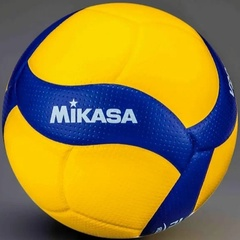
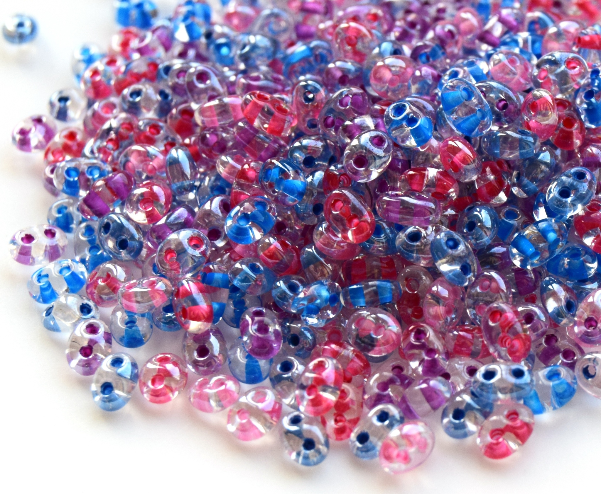
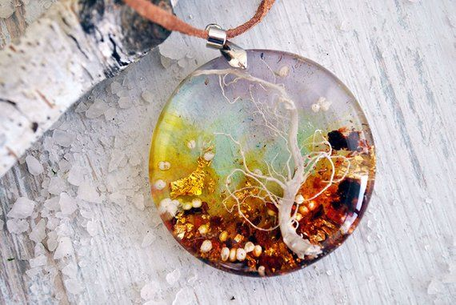

Портфолио
Олимпиада по математике 5 класс
Олимпиада по английскому языку 6 класс
Олимпиада по истории 6 класс
Олимпиада по географии 6 класс
Увлечения
Волейбол
Волейбол — интересный и весёлый вид спорта, который объединяет игроков и развивает внимание.
Во время игры нет времени отвлечься, нужно быть сфокусированным на мяче и на действиях своего соперника.
Бисероплетение
Бисероплетение — увлечение, которое позволяет создавать красивые изделия своими руками.
Из бисера можно плести браслеты, серёжки, ожерелья, игрушки и другие вещи.
Эпоксидная смола
Увлечение эпоксидной смолой позволяет воплощать задуманное в реальность,
создавать уникальные изделия, например часы, подстаканники, разделочные доски
Желания
- Путешествовать по миру
- Научиться играть на гитаре
- Прыгнуть с парашютом.
- Прокатиться на воздушном шаре.
- Встретить закат на пляже с любимым человеком.
- Приготовить торт своими руками.
- Поиграть в волейбол на пляже.
- Научиться плавать.
- Поплавать с аквалангом в красивом месте.
- Лежать на траве и смотреть на звёзды с человеком, которого любишь.
- Провести всю ночь на улице.
- Сходить в поход с палатками.
- Пожарить зефир на костре.
- Петь песни под гитару у костра.
- Прыгать через костёр.
- Съесть круассан в лучшем кафе Парижа.
- Снять номер в парижском отеле, с балкона которого открывается вид на Эйфелеву башню.
- Провести несколько дней на Бали с близким человеком.
- Вернуться в стены родной школы через несколько лет после выпуска и посмотреть, изменилось ли что-нибудь.
- Увидеть северное сияние.
Моя профессия
Я хочу стать программистом, потому что мне нравится создавать новые технологии и решать интересные задачи.
Для этого нужно хорошо изучить языки программирования, такие как Python и JavaScript, а также пройти курсы по алгоритмам и структурам данных.
Цель на год
Цель на год: Научиться играть на гитаре
Для достижения этой цели я планирую:
- Купить гитару
- Найти хорошего учителя или онлайн-курсы
- Практиковаться каждый день минимум по 30 минут
- Записывать своё продвижение на видео раз в месяц